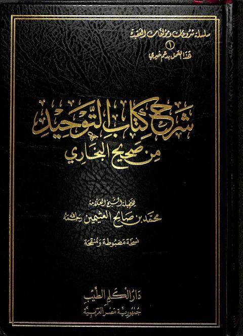

دار الكلم الطيب
Publisher
Resources

شرح كتاب التوحيد من صحيح البخاري- العثيمين شرح كتاب التوحيد من صحيح البخاري- العثيمين محمد بن صالح العثيمين أطراف مسند الإمام أحمد بن حنبل المسمى إطراف المسند المعتلي بأطراف المسند الحنبلي
أطراف مسند الإمام أحمد بن حنبل المسمى إطراف المسند المعتلي بأطراف المسند الحنبلي
أحمد بن علي بن حجر العسقلاني
أطراف مسند الإمام أحمد بن حنبل المسمى إطراف المسند المعتلي بأطراف المسند الحنبلي
أطراف مسند الإمام أحمد بن حنبل المسمى إطراف المسند المعتلي بأطراف المسند الحنبلي
أحمد بن علي بن حجر العسقلاني